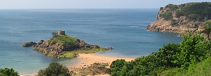
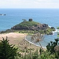

L'îlet r'mèrquabl'ye tch'est mâté dans l'Portélet à Saint Brélade est bein connu - nou-s'en hale des portraits tréjous pouor l's almonnas, d'la publyicité, et tout chenna. Ch'est bein un sŷmbole dé Jèrri, mais y'a bein pus d'monde tch'èrconnaîssent l'îlet qu'en connaîssent lé nom. Ch't îlet a nom l'Île au Dgèrdain.
Sans doute l'île prend san nom d'la fanmil'ye Dgèrdain tch'avait des tèrrains là l'tou. Thonmas L'Goupil dit Dgèrdain, un Vîngtn'yi d'Saint Brélade, s'mathyit auve Mathie B'nêt en 1602. Y'a eune pièrre dé mathiage "TLG et MB 1607" au d'ssus d'l'us d'eune maîson sus la côte.
Mais ch'n'est pon l'Sieur Dgèrdain auve tchi l'histouaithe a entouortilyi l'nom d'l'îlet. Ch'est auve lé nom d'un cèrtain cap'taine Janvrîn qu'nou-s'a grée eune légende tchi reste dans la mémouaithe du peupl'ye.

Y'avait en 1721 la peste à Nantes. Lé Cap'taine Janvrîn rentrait en Jèrri dé chu port Bréton. I' fut oblyigi d'mouoilli san baté à Belle Croute pouor la quarantaine. Auprès deux jours lé cap'taine mouothit d'la peste. Nou n'pèrmînt pon à sa veuve d'entèrrer s'n houmme à tèrre par crainte dé la peste, mais nou pèrmînt qu'lé cap'taine fûsse entèrré sus l'îlet au Portélet viyant qu'la mé entouothait (au haut dg'ieau) chu rotchi-là.
Pus tard la veuve démandit la pèrmission d'rentèrrer s'n houmme dans l'chînm'tchiéthe dé Saint Brélade et v'là tchi fut ag'vé.
 Y'a eune crianche qu'la tou sus l'Île au Dgèrdain mèrque la sépultuthe du Cap'taine Janvrîn. Nou-fait! La tou fut bâtie pouor la fortificâtion d'la côte en 1808, bein d's années auprès qu'lé corps du cap'taine eûsse 'té dêfoui et transféthé. Don la tou n'est pon la tombe à Janvrîn; l'îlet est l'Île au Dgèrdain!
Y'a eune crianche qu'la tou sus l'Île au Dgèrdain mèrque la sépultuthe du Cap'taine Janvrîn. Nou-fait! La tou fut bâtie pouor la fortificâtion d'la côte en 1808, bein d's années auprès qu'lé corps du cap'taine eûsse 'té dêfoui et transféthé. Don la tou n'est pon la tombe à Janvrîn; l'îlet est l'Île au Dgèrdain!
Viyiz étout: